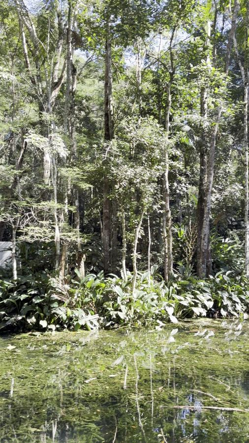
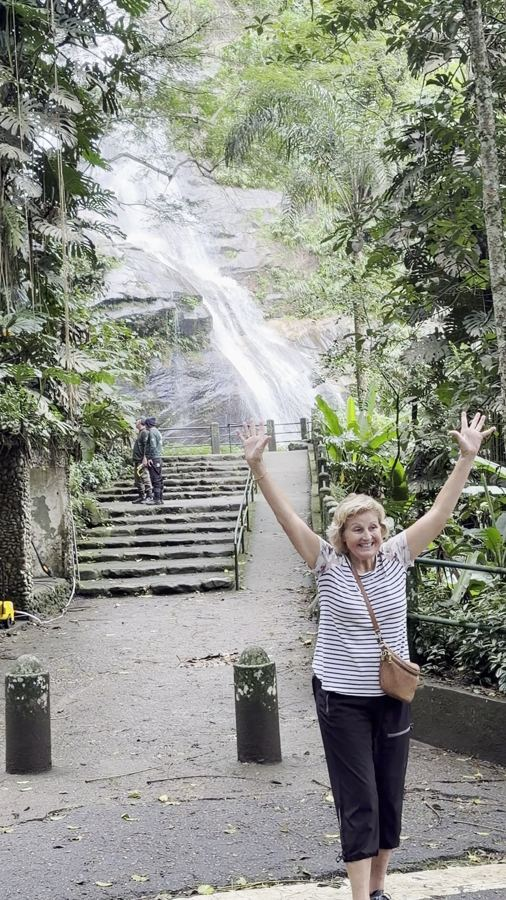
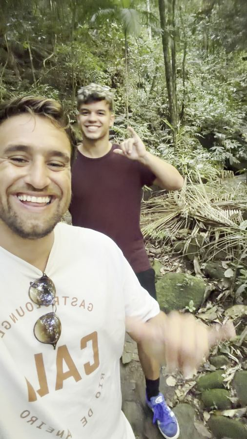
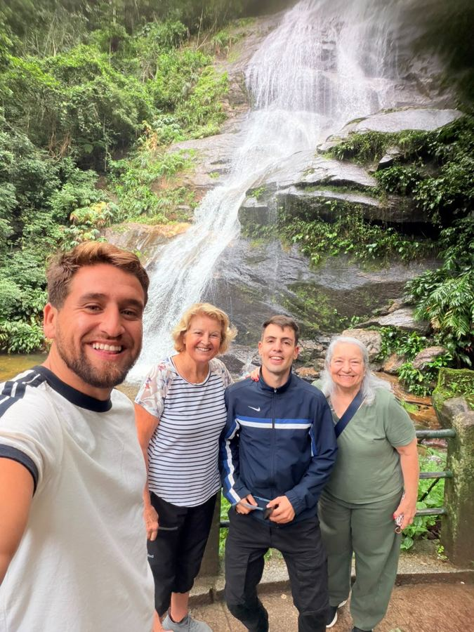

EXPERIENCIA RIO IA
Floresta da Tijuca
y sus cascadas
Uno de los bosques urbanos más grandes del mundo, a minutos de la playa: senderos, cascadas y miradores.
SenderosCascadasVista ChinesaGuía todo el recorrido
VALORDesde R$ 200
Por persona, según el tamaño del grupo y el traslado.
Valor de temporada baja, válido hasta el 25/12/2026.
La experiencia
Senderos en la selva
Caminos entre árboles gigantes y pájaros de la Mata Atlántica, según el nivel del grupo.
Las cascadas
Paradas en las cascadas para refrescarse y sacar las mejores fotos.

Vista Chinesa
El mirador con la Lagoa y el Pan de Azúcar de fondo.
Momentos reales de nuestros paseos
Cascatinha Taunay
 Cascadas escondidas
Cascadas escondidas Árboles gigantes
Árboles gigantesFauna del bosque

Lagos en la selva
Llegada a la cascada
Buena onda
Clientes en la cascadaFotos y videos reales de nuestros paseos.
Qué incluye
- Guía acompañándolos todo el recorrido
- Senderos según el nivel del grupo
- Paradas en las cascadas
- Mirador Vista Chinesa
- Coordinación por WhatsApp de principio a fin
Qué llevar
- Zapatillas cómodas
- Malla y toalla chica
- Una muda de ropa seca para la vuelta
- Protector solar, agua y repelente
Cómo reservar
Reserva: se confirma con el pago del 100%, por Pix o tarjeta (con tarjeta +5%). Te confirmamos todo por WhatsApp.
Reservar por WhatsApp
← Ver todas las experiencias